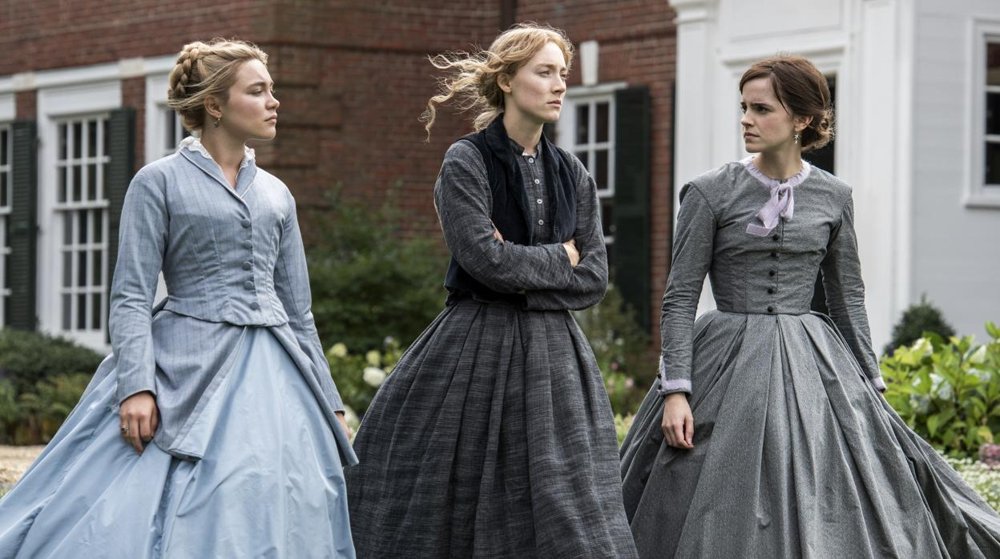

GRETA GERWIG Y SU IMPACTO EN EL CINE
Greta Gerwig ya es una imprescindible en el Hollywood de hoy. La actriz, directora, guionista y productora ha ido encontrando su
lugar en la industria desde sus primeros años como musa del mumblecore norteamericano hasta su conversión en creadora de historias
que aspira a grandes presupuestos. Gerwig es una fuerza creativa en una industria necesitada de voces femeninas. Y su andadura no
ha hecho más que empezar.
Aunque en 2008 ya había probado a ponerse tras la cámara en Noches y fines de semana, una película que dirigió junto a Joe Swanberg y
lo que demuestra que sus inquietudes como realizadora llegaron antes que sus deseos de ser actriz, no fue hasta 2017 cuando lo hizo
en su primer largometraje en solitario. Lady Bird llegaba a los cines a finales de aquel año, con una Saoirse Ronan como protagonista
con la que parece haber formado una sólida relación de musa y directora desde entonces. La actriz encarnaba a una adolescente a punto
de cumplir la mayoría de edad en Sacramento, la ciudad de nacimiento de Gerwig y la señal de que podría tratarse de una historia con
tintes autobiográficos. Lady Bird, pues así quería ser llamada la protagonista, era una chica algo repelente con ganas de comerse el
mundo como artista en un lugar en el que se siente incomprendida. Mejor película, Mejor directora, Mejor actriz protagonista, Mejor
actriz secundaria y Mejor guion original fueron las nominaciones que consiguió el largometraje en los Premios Oscar, un hito incontestable
para una cinta dirigida por una mujer con un presupuesto reducido.
'Lady Bird' no es sin embargo su debut como directora. De hecho, codirigió, coescribió y coprotagonizó 'Nights and Weekends' (2008) junto a Joe Swanberg, un realizador clave del indie americano. Antes ya había intervenido, a las órdenes del mismo director, en la serie 'Young American Bodies' (2006), en el corto ‘Thanks for the Add!’ (2006) y en los largos ‘Lol’ (2006) y en el emblemático 'Hannah Takes the Stairs' (2007), que coescribió.
Joe Swamberg fue uno de los máximos apóstoles del llamado mumblecore, un movimiento llamado a restituir la pureza del cine indie americano, ya muy vampirizado por los grandes estudios de Hollywood. Eran películas pequeñas, hechas entre amigos, con presupuestos diminutos. En ‘Hannah Takes the Stairs’, Greta hacía día de playa con Mark Duplass, que la dirigió, junto a su hermano Jay, en 'Baghead' (2008), otro clásico de dicho movimiento.
En aquellos primeros años, Greta estaba sin embargo muy deprimida. "Se supone que es el mejor momento de mi vida, y sin embargo me siento miserable", decía. Quizás por eso dio un giro aterrador al apuntarse a 'La Casa del Diablo' (Ti West, 2009), cinta de culto que, estrenada en deuvedé en nuestro país, sigue siendo su única incursión en el género que se parodiaba en 'Baghead'.
Noah Baumbach, que produjo 'Alexander the Last', de Joe Swanberg, contó con Greta para la genial 'Greenberg' (2010), que aquí también se estrenó en deuvedé, y al poco empezaron a salir juntos. Juntos escribieron la celebrada 'Frances Ha' (2012), que le valió ser nominada al Globo de Oro. Siguió 'Mistress America', y un proyecto de adaptación de 'Las correcciones', la ya clásica novela de Jonathan Franzen, que al final HBO no compró.
BORN IN SACRAMENTO

UNA CHICA PARTICULAR
¿Por qué nos gusta tanto? Quizás, porque es única. No parece una chica de calendario, sino alguien que podrías llegar a conocer en el mundo
real. Es inteligente, muy leída ('Lady Bird' se abre con una cita de Joan Didion, también de Sacramento, y enseguida aparece Saoirse con su madre
escuchando un audiolibro de John Steinbeck en el coche), y destaca por su sentido del humor, y por una sonrisa que enamora.

DEBUT COMO DIRECTORA
'Lady Bird' no es sin embargo su debut como directora. De hecho, codirigió, coescribió y coprotagonizó 'Nights and Weekends' (2008) junto a
Joe Swanberg, un realizador clave del indie americano. Antes ya había intervenido, a las órdenes del mismo director, en la serie 'Young
American Bodies' (2006), en el corto ‘Thanks for the Add!’ (2006) y en los largos ‘Lol’ (2006) y en el emblemático 'Hannah Takes the Stairs' (2007), que coescribió.